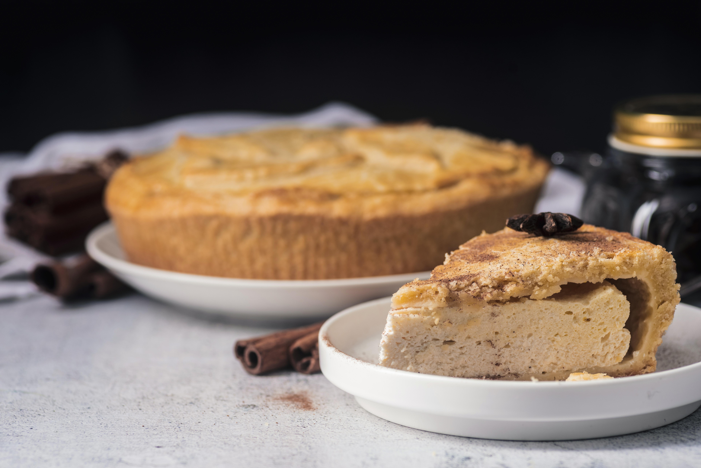

Home
Peanut Butter Pie

Peanut Butter Pie
This peanut butter pie recipe is very easy to make. Garnish with peanut butter cups for an extra special treat!
Ingredients
1 (8 ounce) package cream cheese, softened
- 1/2 cup creamy peanut butter
- 1/2 cup confectioners sugar
- 1 (16 ounce) container frozen whipped topping, thawed, divided
- 1 (9-inch) prepared graham cracker crust
- 15 miniature chocolate-covered peanut butter cups (such as Reese's), unwrapped
Directions
- Gather all ingredients.
- Mix cream cheese, peanut butter, and confectioners' sugar together until smooth.
- Fold in 1/2 of the whipped topping, then spoon the mixture into graham cracker crust.
- Spread remaining whipped topping over the peanut butter mixture and garnish with peanut butter cups. Chill for at least 2 hours or overnight before serving.
- Serve and enjoy!